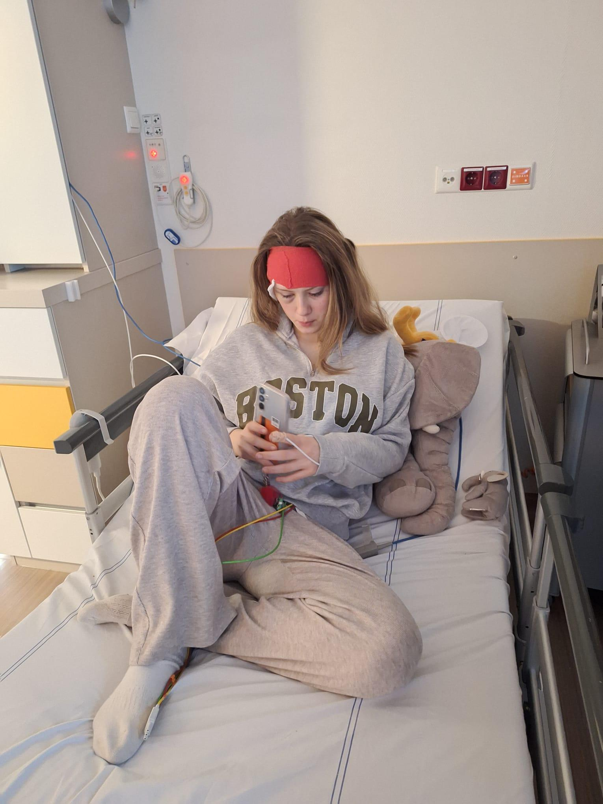

Een persoonlijk woord van vader Bas:
🙏🙏🙏🥳🎉🥳🎉❤️😘🥰❤️😘🥰❤️😘🥰
LIEVE LIEVE LIEVE MENSEN!!! WAT EEN ROLLERCOASTER WAS DIT!!! ZO VET!!! ONBESCHRIJFELIJK WAT JULLIE OVER HEBBEN VOOR MIJN DOCHTER!!! ONZE DANK KAN ECHT NIET GROTER!!! DIKKE VETTE SHOUTOUT NAAR IEDEREEN DIE HEEFT GEDONEERD OF DIT ANDERS NOG VAN PLAN WAS!!!
NOW IT'S PARTY TIME!!!!! HOU DE SITE IN DE GATEN OM HAAR REACTIE TE ZIEN EN MEE TE GENIETEN VAN ALLE MOOIS WAT ZE DANKZIJ JULLIE ALLEMAAL KAN GAAN BELEVEN!!!
🙏🙏🙏🥳🎉🥳🎉❤️😘🥰❤️😘🥰❤️😘🥰
- Bas van Alphen
🛍️ Wat gebeurt er nu?
Met dit fantastische bedrag gaat zij meerdere keren extreem shoppen. We houden jullie op de hoogte via deze site.
Het verhaal van Ise
Voor wie het verhaal nog niet kent: Ise is een dappere 16-jarige meid die onlangs te horen kreeg dat ze een hersentumor heeft die helaas niet te genezen valt. Haar vader Bas startte deze actie om haar ultieme droom waar te maken: een onvergetelijke shopdag.

Wat begon als een bescheiden wens voor €1.000 is uitgegroeid tot een ongelooflijk succesverhaal van menselijke goedheid. Jullie hebben bewezen dat liefde en medeleven grenzeloos zijn.